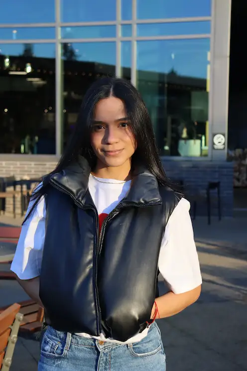

During my days I love do workout, and summer is my favorite season here in kirkland so, picnics and bbq are part of my weekends, this summer I would love learn tennis
I consider a fast learning an skill, I learned how to do surf my first summer here, and Im so exciting to learn next winter how to do snowboarding, also my strongest skills is I know how drive a standar car and I love cars
My family is the most important thing in my life, they are in Colombia and they support me a lot, and also when I decided to travel ouside the country. Also here in usa I made new friends and they are my family here we support each other and we We are in the same stage together.

Im 29 years old and Im from Colombia and of course I love coffe and arepas, I consider my self as a road trips lover and a outgoing person, my favorite person is my mom and she born a wild cute girl.
I have been for three years in washington state, currently Im studying Design at Lwtech, and this is the most challengin thing that I did in my whole life, when you move to another country it is turning your life around 360 degrees.
The purpose of life is to live it, to taste experience to the utmost -Eleanor Roosvelt
Favorite animals: monkey and dog
Favorite food: steak and Italian food
Favorite color: lila
San andres island have the beast sea in Colombia, Its called the seven colors sea
Best destinationColombia is know as a variety food destination and yes we are a meat lover
Most popular foodThere is tons of famous restaurants in the country in my last trip this where the place that I tried octupus and I like it
Popular restaurant my home page go to top of page